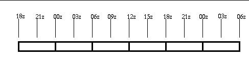
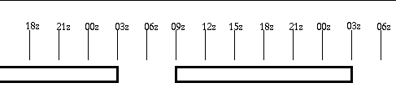
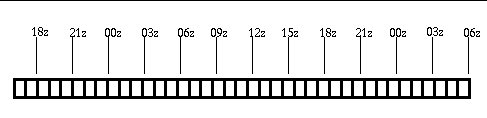

ifpAG User's Guide
January 4, 2012
Table of Contents
Overview
The ifpAG (ASCII grid) program is part of the
GFESuite
of product generation software.
The current EDEX (common data server)
currently
uses a Java interface to store and retrieve grids in the database. While
this works well for the Graphical Forecast Editor and initialization
processes,
it makes it difficult for field sites to store and retrieve data into the
database.
The ASCII grid format, along with its associated program, allows the
user to store and retrieve grids that are specified in a special ASCII
format. This format is chosen to make it easy for users who program in
basic, Fortran, or C to read and write this format.
Another use of the ifpAG program is to
transfer
grids between different resolutions of GFESuite. The format
of
the output of ifpAG has been preserved between software builds.
The
program will automatically translate grid resolutions and domains when
storing and retrieving data. For example, you can use the ifpAG
program
to take 5 kilometer resolution grids from GFESuite and populate another
GFESuite running at 2.5 kilometer resolution. Of course, data
resolution
will be lost. Obviously there are some cases where
grids
cannot be transferred, such as the input and output domains don't
overlap
at all or the projection is different (e.g., Grid211).
Terminology
and
Concepts of GFESuite Gridded Data
In order for you to understand how to interpret
the
output, or format the input, to ifpAG, you need to understand these
basic
GFESuite concepts.
Server Configuration
Data Types
GFE supports four different data types:
SCALAR, VECTOR, WEATHER, and DISCRETE. SCALAR is used for parameters
whose
values can be represented by a single value. VECTOR is used for
parameters
who values are represented by a vector (magnitude and direction).
WEATHER
is a special format for describing the precipitation and obstructions
to
vision. DISCRETE is for categorical weather elements, such as
headline
grids.
Weather Element Identifier
A parameter identifier is used to uniquely
identify
an element in the database. A parameter identifier consists of two
parts: parameter name, and database identifier. A complete
identifier (in ASCII) may appear like the following in the ASCII grid
file:
Wind
BOU
<notype>
MRF
19980506_1200
The first line indicates the parameter name, the second the site
identifier,
the third is the optional type of the database, the fourth is the model
name, and the last line is the model run time in the form of yyyymmdd_hhmm.
The example above indicates that the parameter is Wind. It is from (or
derived from) 1the May 6, 1998 1200z eta model. The optional type is
blank
in the above case.
There may be some databases which always exist, i.e., are not model
time based. Typically the forecast database is handled this way.
An example identifier for the forecast database is shown below:
T
BOU
<notype>
Fcst
00000000_0000
The date-time group of all zeros indicate that the database is
persistent
and therefore does not have a model run time associated with it.
A full list of parameters, site identifiers, and
model names supported by GFE is available in the server
configuration
files. Refer to the
server
configuration
manual for details. This server configuration files may be
tailored
by each site.
Note that the parameter name may contain a level. Many of the
parameters are surface-based, but for those that are not, the parameter
definition is in the form of name_level, such as Wind_MB500 for the
500MB Wind.
Time Range (Valid time of grid)
Time is defined as a TimeRange which consists of
a starting and ending time. A TimeRange contains all times from and
including the starting time up to but not including the
ending
time. For example, a TimeRange of 1:00pm to 2:00pm contains all times
from 1:00pm including 1:00pm up to but not including
2:00pm.
All data stored in the database uses this time definition. The duration
of data is calculated by taking subtracting the starting time
from the ending time. Note that a duration of zero
means a snapshot in time. Durations of zero are illegal for the
database since a forecast field must have a valid time range.
The format of the time is in yyyymmdd_hhmm. For example,
19980518_1300
indicates May 18, 1998 at 1300z.
Geographical
Location Information
Associated with each grid is geographical
location
which is used to position the grid on the earth's surface.The placement
of the grid in the world coordinate system is based on
three
items:
- projection identifier
- grid domain
- grid size
All of these items are defined in the individual
database configuration files. An example of these values are shown
below
for the Boulder WFO area:
- projection identifier =
Grid211 (AWIPS Conus)
- grid domain - origin is
(37.0, 27.0), extent is
(9.0,
9.0)
- grid size - 73 x 73
This is interpreted as a 73 x 73 point grid whose
lowest-left grid point is at the world coordinate (37, 27) on the AWIPS
world coordinate projection and whose uppermost-right
grid
point is at the world coordinate (37+9, 27+9) as shown in the diagram below:
Time Independent Parm
The time independent parm flag (0 for false,
non-zero
for true) indicates that this parameter has no valid time associated
with
it, therefore only one grid, which is valid forever may be stored into
the database. In almost all cases, 0 for not time independent parm will
be set.
Data Precision
The number of significant decimal points for the
data. A value of 0 indicates that integer values are all that is
important
(even if there is more precision indicated by the data). A value of 1
indicates
that the precision is 10 -1 or 0.1.
Parameter Units
The parameter units field indicates the units
used
by the data.
Descriptive Name
The descriptive name field provides a more
detailed
description of the parameter.
Time Constraints
The time constraints consist of three elements:
starting
time, duration, and repeat interval. These values indicate the time
limits
that the parameter must obey. All grids for the parameter must be
aligned
on the specified time constraints. The starting time indicates the time
of the first possible grid after 0000z. The duration indicates the
length
of the grid. The repeat interval defines how often the grid can repeat.
All of the units are in seconds. For example, the illustration below shows the
possible
grid boundaries for a time constraint of starting time of 0, duration
of
6 hours, and repeat interval of 6 hours:

In the above example, grids can be a minimum of 6
hours long, but could be 12 or 18 or even 24 hours in length just as
long
as the starting and ending time of the grid falls on one of the defined
above. A time constraint can be defined to have gaps in
the data. For example, a 24-hour summary of daytime maximum temperature
may have a constraint of starting time 900z, duration of 18 hours, and
a repeat interval of 24 hours:

Most parameters are defined in the database with
a one hour constraint (start time = 0000z, repeat = 1 hour, duration =
1h). Therefore the highest temporal resolution of the grids is one hour:

A special case exists which defines no constraints.
This is the situation with a start time, repeat, and duration values
all set to 0. The temporal resolution of the grids can be one second.
Data Format
The format of the data depends upon whether the
data
is SCALAR, VECTOR, WEATHER, or DISCRETE.
Scalar Data Format
There are nx*ny lines of data in the file, with
each
line representing one data gridpoint. The values are floating-point.
Vector Data Format
There are nx*ny lines of data in the file, with
each
line representing one data gridpoint. There are two floating-point
values
on each line. The first is the magnitude and the second the direction.
Weather Data Format
There are nx*ny lines of data in the file, with
each
line representing one data gridpoint. There is a string of characters
on
each line. The characters define the type of weather and/or
obstructions
to vision that are present for that gridpoint. The entire set of
characters
on a single line is called a weather key. A weather key is comprised of
weather sub keys.
A weather subkey consists of four parts and one additional optional
part:
weather type (e.g., rain)
coverage or probability (e.g.,
scattered or slight chance)
intensity (e.g., light)
visibility (e.g., 25 m)
attributes (e.g., "in
mountains")
The general format of a single weather sub key is:
coverage:type:intensity:visibility:attributes
The coverage is a special coverage string of characters that denote
the precipitation or obstruction to vision coverage. The type is the
precipitation
type or obstruction as a string of characters. The intensity field is a
string of characters that denote an intensity. The visibility string
denotes
the character. The list of optional attributes are comma deliminated.
Multiple weather sub keys are separated by the caret (^) character
like this:
coverage1:type1:intensity1:visibility1:attribute1,attribute2^coverage2:type2:intensity2:visibility2:attribute3
There is no (practical) limit to the number of types of weather.
Multiple
weather types at a single grid point require a weather key that
contains
multiple groupings. A typical weather key is shown below:
ISO:T:+:1/4sm:HvyRain^ISO:A:<NoInten>:<NoVis>:SmA
which is decoded as isolated intense thunder with
1/4
sm visibility, isolated small hail.
No precipitation or obstructions is indicated by:
<NoCov>:<NoType>:<NoInten>:<NoVis>:
The server
configuration
files define the allowable values of the weather key. Refer
to
the weather
configuration
section of the serverConfig documentation for further details.
Discrete Data Format
There are nx*ny lines of data in the file, with
each
line representing one data gridpoint. There is a string of characters
on
each line. The characters define the discrete key(s) that are present
for
that gridpoint. The entire set of characters on a single line is called
a discrete key. A discrete key may be comprised of discrete sub
keys.
Subkeys are separated by the '^' character.
A typical discrete key is shown below:
WintStmWRN^HiWndWRN
which is decoded as Winter Storm Warning and High
Wind
Warning.
No discrete key is typically denoted by:
<None>
The server
configuration
files define the allowable values of the weather key. Refer
to
the weather
element configuration section of the serverConfig documentation for
further details.
Organizational Order of the Grid
Grids are organized from lower-left across and
then
by row, with the very last point being the upper right gridpoint as
shown:
Running the ifpAG Program
The program is capable of both storing and
retrieving
grids from EDEX.
Note: when running ifpAG in the normal
environment,
the -h and the -r switches are preset to the values defined by your
installation,
and thus the -h and -r switches are not needed. If you are
connecting
to a different EDEX than configured, then you will need the -h and
-r switches.
Output Mode
The command line syntax is:
ifpAG -o outputFile -h hostname -r
rpcPortNumber
-d databaseID [-p parmID] [-s startTime] [-e endTime] [-u username] [-c
domainConfiguration]
A sample command line is:
ifpAG -o testIt -h dx3-oax -r
9581
-d TEST_GRID__Fcst_00000000_0000 -p Temp -s 19980604_1200 -e
19980605_0000
| Option Syntax |
Optional or Mandatory |
Description |
| -o filename |
Mandatory |
Specifies the name of the output file. If "-" is used,
output
will go to standard out. |
| -h hostname |
Mandatory (See Note) |
Specifies the host, upon which EDEX is running |
| -r port |
Mandatory (See Note) |
Specifies the port, upon which EDEX is running |
| -d databaseid |
Mandatory |
Source, a.k.a. database identifier, from which to get the
data.
There may be several databaseIDs (several -d's) specified. The
format of the database identifier is:
site_GRID_optType_modelName_modelRunTime.
An example is DEN_GRID__eta_19980604_1200. |
| -p weatherElementName |
Optional |
If no -p switches are present, then all weather elements in
the specified
databases will be processed. There may be several -p switches
present
if desired. The weather element name can include a level, if
desired,
such as T_3K. By default if the level is not specified, it is
assumed
to be SFC. |
| -u username |
Optional |
The user running the program. |
| -s startTime |
Optional |
Specifies the start time for the range of
grids to
extract. If no time is specified, then assume "from the beginning of
time".
Format is yyyyMMDD_HHMM or 19980604_1200.
|
| -e endTime |
Optional |
Specifies the ending time for the range of
grids
to extract. If no time is specified, then assume "to the end of
time".
Format is yyyyMMDD_HHMM or 19980604_1200.
|
| -c domainConfiguration |
Optional |
By default, the grids are output in the same projection,
domain, and
grid resolution as they are stored in GFE. You can
override
the domain configuration by specifying an encoded string in
quotes.
The format is "xgridSize ygridSize projectionId xorigin yorigin xextent
yextent". An example is "35 35 Grid211 28.0 14.0 9.0 9.0". |
Note: that when running ifpAG within the
standard
GFESuite environment, the -h and -r switches are automatically filled
in for the configured EDEX and port.
Input Mode
The command line syntax is:
ifpAG -i inputFile -h hostname -r
rpcPortNumber [-u username]
A sample command line is:
ifpAG -i testIt -h dx3-oax -r 9581 -u jsmith
| Option Syntax |
Optional or Mandatory |
Description |
| -i filename |
Mandatory |
Specifies the name of the input file. If "-" is used, input will
come from standard in. |
| -h hostname |
Mandatory (See Note) |
Specifies the host, upon which EDEX is running |
| -r port |
Mandatory (See Note) |
Specifies the port, upon which EDEX is running |
| -u username |
Optional |
Specifies the user running the program |
Note: that when running ifpAG within the
standard
GFESuite environment, the -h and -r switches are automatically filled
in
for the configured EDEX and port.
Special
Use of ifpAG to exchange grids between different resolutions of GFESuite
ifpAG can be used to communicate with different
servers of GFESuite that are running different resolutions. To transfer
all data in the Fcst database from
one server to the other server, you will use a command line similar to
that below:
ifpAG -o - -h dx3-oax -r 9581 -d
BOU_GRID__Fcst_00000000_0000
| ifpAG -i - -h dx3-oax -r 9581
Example Data
The following shows example data files and how it
is interpreted. More than one GRID may be contained in a single file.
Scalar
| ASCIIGRID |
Identifies the following structure as an ASCIIGRID |
| SCALAR |
Data Type (SCALAR, VECTOR, WEATHER, DISCRETE) |
| T |
Weather Element Name |
| DEN |
Database site identifier |
| <notype> |
Database optional type |
| Fcst |
Database model name |
| 00000000_0000 |
Database time (denotes no model time associated with it when
all zeros,
normally yyyymmdd_hhmm) |
| Grid211 |
Projection Identifier |
| 73 73 25 13 9 9 |
Domain information. XGridSize, YGridSize, Minimum X world
coordinate
domain, Minimum Y world coordinate domain, X domain extent, y domain
extent |
| F |
Units |
| Surface Temp |
Descriptive Name |
| -50 130 0 0 |
Minimum possible value, maximum possible value, data
precision, time
independent parameter |
| 0 3600 3600 |
Time constraints (startTime, duration, repeat interval). |
| 19980518_1200 19980518_1500 |
Valid time range for grid (start time, ending time) in format
of yyyymmdd_hhmm |
| 51 |
First grid point - Grid(0,0) |
| 52 |
Next grid point - Grid(1,0) |
| 54 |
Grid(2,0) |
| 52 |
Grid(3,0) |
| ... |
continues for a total of nx*ny grid points |
| 59 |
Grid (upper right corner) |
Vector
| ASCIIGRID |
Identifies the following structure as an ASCIIGRID |
| VECTOR |
Data Type (SCALAR, VECTOR, WEATHER, DISCRETE) |
| Wind |
Weather Element Name |
| DEN |
Database site identifier |
| <notype> |
Database optional type |
| Fcst |
Database model name |
| 00000000_0000 |
Database time (denotes no model time associated with it when
all zeros,
normally yyyymmdd_hhmm) |
| Grid211 |
Projection Identifier |
| 73 73 25 13 9 9 |
Domain information. XGridSize, YGridSize, Minimum X world
coordinate
domain, Minimum Y world coordinate domain, X domain extent, y domain
extent |
| Knots |
Units |
| Surface Wind |
Descriptive Name |
| 0 125 0 0 |
Minimum possible value, maximum possible value, data
precision, time
independent parameter |
| 0 3600 3600 |
Time constraints (startTime, duration, repeat interval). |
| 19980518_1200 19980518_1500 |
Valid time range for grid (start time, ending time) in format
of yyyymmdd_hhmm |
| 5 90 |
First grid point - Grid(0,0) with magnitude first,
followed by
direction |
| 6 92 |
Next grid point - Grid(1,0) |
| 11 88 |
Grid(2,0) |
| 9 85 |
Grid(3,0) |
| ... |
continues for a total of nx*ny grid points |
| 15 270 |
Grid (upper right corner) |
Weather
| ASCIIGRID |
Identifies the following structure as an ASCIIGRID |
| WEATHER |
Data Type (SCALAR, VECTOR, WEATHER, DISCRETE) |
| Wx |
Weather Element Name |
| DEN |
Database site identifier |
| <notype> |
Database optional type |
| Fcst |
Database model name |
| 00000000_0000 |
Database time (denotes no model time associated with it when
all zeros,
normally yyyymmdd_hhmm) |
| Grid211 |
Projection Identifier |
| 73 73 25 13 9 9 |
Domain information. XGridSize, YGridSize, Minimum X world
coordinate
domain, Minimum Y world coordinate domain, X domain extent, y domain
extent |
| discrete |
Units |
| Weather and Obstructions |
Descriptive Name |
| 0 1 0 0 |
Minimum possible value, maximum possible value, data
precision, time
independent parameter |
| 0 3600 3600 |
Time constraints (startTime, duration, repeat interval). |
| 19980518_1200 19980518_1500 |
Valid time range for grid (start time, ending time) in format
of yyyymmdd_hhmm |
| <NoCov>:<NoWx>:<NoInten>:<NoVis>: |
First grid point - Grid(0,0) - coded weather key |
|
Ocnl:R:--:<NoVis>:
|
Next grid point - Grid(1,0) |
|
Ocnl:R:--:<NoVis>:
|
Grid(2,0) |
|
Iso:T:++1/4sm:HvyRain
|
Grid(3,0) |
| ... |
continues for a total of nx*ny grid points |
| <NoCov>:<NoWx>:<NoInten>:<NoVis>: |
Grid (upper right corner) |
Discrete Data Format
| ASCIIGRID |
Identifies the following structure as an ASCIIGRID |
| DISCRETE |
Data Type (SCALAR, VECTOR, WEATHER, DISCRETE) |
| Highlights |
Weather Element Name |
| DEN |
Database site identifier |
| <notype> |
Database optional type |
| Fcst |
Database model name |
| 00000000_0000 |
Database time (denotes no model time associated with it when
all zeros,
normally yyyymmdd_hhmm) |
| Grid211 |
Projection Identifier |
| 73 73 25 13 9 9 |
Domain information. XGridSize, YGridSize, Minimum X world
coordinate
domain, Minimum Y world coordinate domain, X domain extent, y domain
extent |
| highlights |
Units |
| W/W/A Highlights |
Descriptive Name |
| 0 1 0 0 |
Minimum possible value, maximum possible value, data
precision,
time independent parameter |
| 0 3600 3600 |
Time constraints (startTime, duration, repeat interval). |
| 19980518_1200 19980518_1500 |
Valid time range for grid (start time, ending time) in format
of yyyymmdd_hhmm |
| <None> |
First grid point - Grid(0,0) - coded weather key |
|
<None>
|
Next grid point - Grid(1,0) |
|
WntrStmWRN
|
Grid(2,0) |
|
WntrStmWRN^HiWndWRN
|
Grid(3,0) |
| ... |
continues for a total of nx*ny grid points |
| <None> |
Grid (upper right corner) |